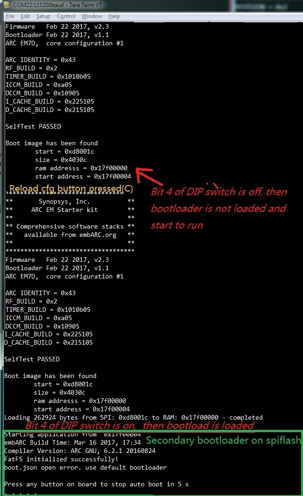
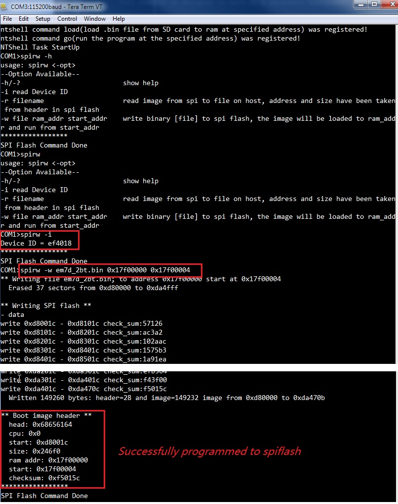

Simple Bootloader¶
Overview¶
This example is designed to work as a secondary bootloader for embARC, it will load boot.hex or boot.bin on SDCard and run that program. And this example itself can be used as ntshell application.
Detailed Description¶
- Extra Required Tools
NO
- Extra Required Peripherals
- SDCard with boot binary(boot.hex or boot.bin)
- Design Concept
This example is designed to work as a secondary bootloader for embARC, it will load boot.hex or boot.bin on SDCard and run that program. And this example itself can be used as ntshell application.
- Usage Manual
As shown in the following picture, when the EMSK configuration in SPI flash is loaded into the FPGA, a simple primary bootloader is also loaded in ICCM. Through the primary bootloader, the application or secondary bootloader can be loaded into external memory (DDR memory), bootloader start address is 0x17F00004, ram address is 0x17F00000.
For EMSK1.x, bootloader core configuration must be arcem6, for EMSK2.x, bootloader core configuration must be arcem7d. For EMSK 1.0, it can be upgraded to 1.1 by 1.1’s firmware. For EMSK 2.0/2.1/2.2, it can be upgraded to 2.3 by 2.3’s firmware.

Here are steps for how to program the secondary bootloader application into onboard SPIFlash (Take EMSK2.3 - ARC EM7D as example) and automatically load and run boot.hex or boot.bin in SDCard.
Generate a secondary bootloader binary file
- Program generated secondary bootloader binary file into SPIFlash

Insert SDCard to your PC, and copy the binary file obj_emsk_23/gnu_arcem7d/emsk_bootloader_gnu_arcem7d.bin to SDCard Root, and rename it to em7d_2bt.bin
Insert the SDCard to EMSK Board, please choose the right core configuration, build and run the <embARC>/example/baremetal/bootloader example, then press any button to stop auto boot process, and enter to ntshell command mode.
- Then use ntshell command spirw to program the em7d_2bt.bin into spiflash.

- Firstly, run spirw to show help
- Secondly, run spirw -i to check SPIFlash ID, it should be Device ID = ef4018
- Thirdly, run spirw -w em7d_2bt.bin 0x17f00000 0x17f00004 to program spiflash
- Check the output message to see if it was programmed successfully.
If programmed successfully, when the board is reset, make sure Bit 4 of the onboard DIP switch is ON to enable secondary bootloader run.
If the sdcard already contains the boot.bin in it, the bootloader will automatically load it from sdcard, if not, it will enter to ntshell mode.
You can goto the next step to generate the boot.bin for proper application you want to be auto-loaded in sdcard.
Generate boot.bin using any embARC example which ram start address should be 0x10000000 and use bootloader to run it
- Know Issues
- Bootrom of EMSK1.x is not able to load secondary bootloader on SPIFlash, you need a modified EMSK1.x mcs file to enable this function, please send request in forum about this mcs file.
- The secondary bootloader is a complement of the primary bootloader, and provides the following functions:
- File operations on SD card
- Operations on the EMSK, GPIO, I2C, SPI flash
- Operations on ARC processors
- Automatic boot from SD card, using following instructions:
- burn the bin file of bootloader into EMSK spiflash using spirw command spirw -w bootloader.bin 0x17f00000 0x17f00004 with the help of JTAG
- the primary bootloader should be able to load the secondary bootloader
- put the file you want to boot in the root directory of SD card, name it boot.bin
- plug in SD card
- LED Status of loading application(boot.bin)
- Start to load application: LED on board -> 0x0F
- Load application finished: LED on board -> 0xFF, if application is running normally, LED will quickly change to 0x0
- Load application failed: LED on board -> 0xAA
- Skip loading application, and enter to NTShell runtime: LED on board -> 0x0
- Type help command in ntshell to show the list of supported commands.

- Extra Comments
- Bootrom of EMSK1.x is not able to load secondary bootloader on SPIFlash, you need a modified EMSK1.x mcs file to enable this function, please send
- Make sure that the bootloader can only load application for extract the same core you built for.
- Currently the 2nd bootloader ran in a different place(end of DDR) in DDR which has no conflict with other normal examples placed at start of DDR.
- Bootloader example only support arc core configuration which has DDR with cache enabled.
- Bootloader example runs in DDR ram, not in CCM.
- Bootloader example itself can be treated as a ntshell example, you can run some ntshell commands using this example.
- The bootloader example is also built optimized for the ARC core you selected, so the example built for one specified core may not run successfully
- Supported core configurations
- EMSK 1.1: EM6, EM6GP
- EMSK 2.2/2.3: EM7D, EM11D
Building and Running¶
- Generate a secondary bootloader binary file
$ cd <embarc_root>/example/baremetal/bootloader
$ gmake BOARD=emsk BD_VER=22 CUR_CORE=arcem7d TOOLCHAIN=mw bin
- Generate a secondary bootloader binary file for iotdk use eflash
$ cd <embarc_root>/example/baremetal/bootloader
$ gmake BOARD=iotdk BD_VER=10 CUR_CORE=arcem9d TOOLCHAIN=mw LOCATION=eflash bin
If the binary file is generated successfully, you will output as follows:
"Compiling : " ../../../middleware/ntshell/cmds/cmds_fs/ymodem/ymodemio.c
"Compiling : " ../../../middleware/ntshell/port/ntshell_usrcmd.c
"Compiling : " ../../../middleware/ntshell/port/ntshell_task.c
"Archiving : " obj_emsk_23/gnu_arcem7d/libmidntshell.a
"Compiling : " ../../../middleware/parson/parson.c
"Archiving : " obj_emsk_23/gnu_arcem7d/libmidparson.a
"Compiling : " ../../../arc/arc_timer.c
"Compiling : " ../../../arc/arc_cache.c
"Compiling : " ../../../arc/arc_exception.c
"Compiling : " ../../../arc/arc_udma.c
"Assembling : " ../../../arc/arc_exc_asm.s
"Archiving : " obj_emsk_23/gnu_arcem7d/libcpuarc.a
"Compiling : " ../../../library/clib/fatfs_dirent.c
"Compiling : " ../../../library/clib/malloc.c
"Compiling : " ../../../library/clib/embARC_sbrk.c
"Compiling : " ../../../library/clib/embARC_misc.c
"Compiling : " ../../../library/clib/embARC_syscalls.c
"Compiling : " ../../../library/clib/ya_getopt.c
"Compiling : " ../../../library/clib/embARC_target.c
"Archiving : " obj_emsk_23/gnu_arcem7d/liblibclib.a
"Archiving : " obj_emsk_23/gnu_arcem7d/libembarc.a
"Linking : " obj_emsk_23/gnu_arcem7d/emsk_bootloader_gnu_arcem7d.elf
"Generating Binary obj_emsk_23/gnu_arcem7d/emsk_bootloader_gnu_arcem7d.bin"
- Generate boot.bin using any embARC example which ram start address should be 0x10000000 and use bootloader to run it
- Here take <embarc_root>/example/freertos/kernel for example
$ cd <embarc_root>/example/freertos/kernel $ gmake BOARD=emsk BD_VER=22 CUR_CORE=arcem7d TOOLCHAIN=mw bin
- Insert SDCard to PC, and copy generated binary file obj_emsk_23/gnu_arcem7d/freertos_kernel_gnu_arcem7d.bin to SDCard Root, and rename it to boot.bin
- Insert SDCard back to EMSK, make sure bit 4 of DIP Switch is ON, and press re-configure button above letter C, and wait for autoload.
Note
Make sure you have selected the correct configuration of EMSK via dipswitches and that you have reset the board (button above “R”) to confirm its configuration
Sample Output¶
The output depends on the boot.bin. This sample is using <embarc_root>/example/freertos/kernel.